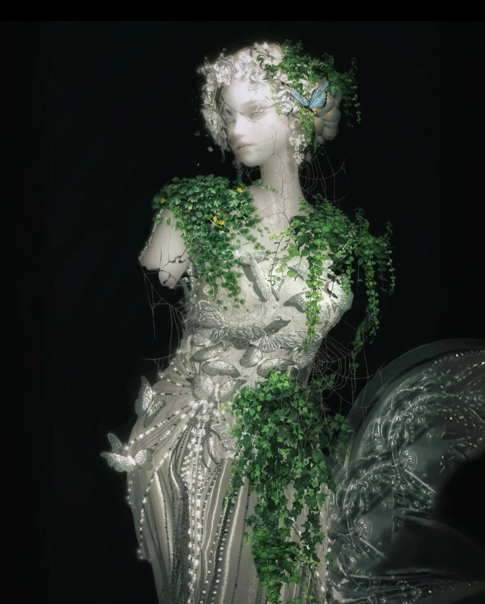
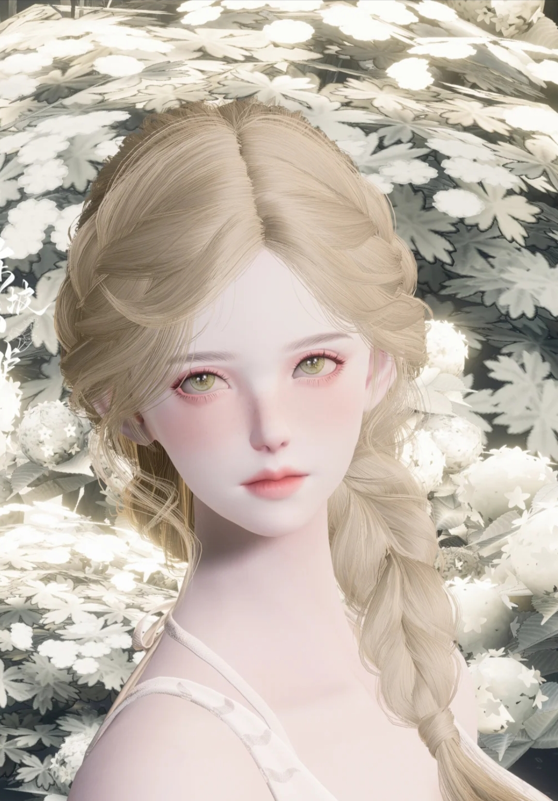
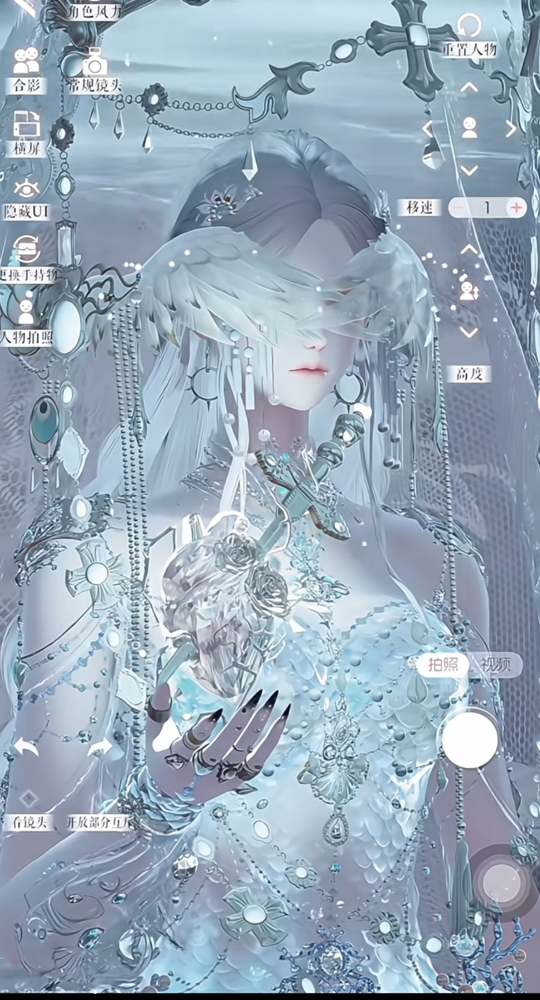

极致自由的形象定制

游戏在角色定制上实现“从妆容到服饰的全维度自由”：
- 精细捏脸系统：超过127个调整维度，从脸型到睫毛卷曲度均可微调（如图7的金发编发与细腻五官，实现“千人千面”的风格差异）；
- 逼真妆容系统：眼影分区晕染、口红多色号叠涂，媲美真实美妆体验（如图8的红黑系妆容，展现“妆容风格无限制”的设计）；
- 高自由度装饰：从服装纹样到配饰细节均可自定义，如图1的绿植与蝴蝶元素，体现“从布料到成品”的全流程设计自由。

拍照系统与风格展示

游戏内置专业拍照功能，支持隐藏UI、调整镜头角度，让穿搭作品成为“虚拟时尚大片”，如图中展示的角色与服饰细节表现力。